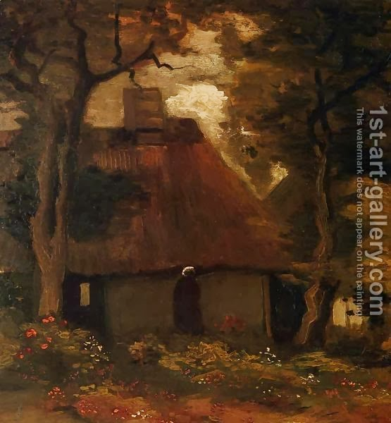

Sukkah 9 - Old sukkah
A sukkah that is "old," that is, one that was built more than thirty days before the holiday of Sukkot, is invalid, since the Torah said, " Sukkot is a festival to God for seven days ." That is, the sukkah must be built expressly for the festival - so say Beit Shammai. However, Beit Hillel rule that an old sukkah is completely valid. One should make a little adjustment to a small area of the roof (s'chach), and that is sufficient. But what does Beit Hillel do with the phrase "festival for seven days"? - They say that it teaches one not use the materials of the sukkah for any other purpose, for all seven days of the festival.
If one builds his sukkah under a tree, it is as if he built it inside the house, and it is invalid. In explaining this, Rava said, "If the tree foliage is thin and lets in more sun that it shades, it is valid." How does Rava know that, given that the rule did not differentiate between thick and thin foliage!? He noticed the precise language of the ruling, "as if inside the house." Just as a house usually shields one from the sun completely, so here we are talking about trees that shield completely, and not those with sparse foliage. And yet, the leaves of the tree do give shade, and the leaves of the sukkah directly underneath are not needed, so let's consider them non-existent. Thus we have a sukkah whose s'chach (a tree) is attached to the ground, and that is definitely invalid! Rava will answer, "He bent the tree's branches down and intertwined them with his s'chach; therefore, they are not above but act in conjunction with the s'chach, which is then valid.
Art: Cottage and Peasant Woman under the Trees By Vincent Van Gogh